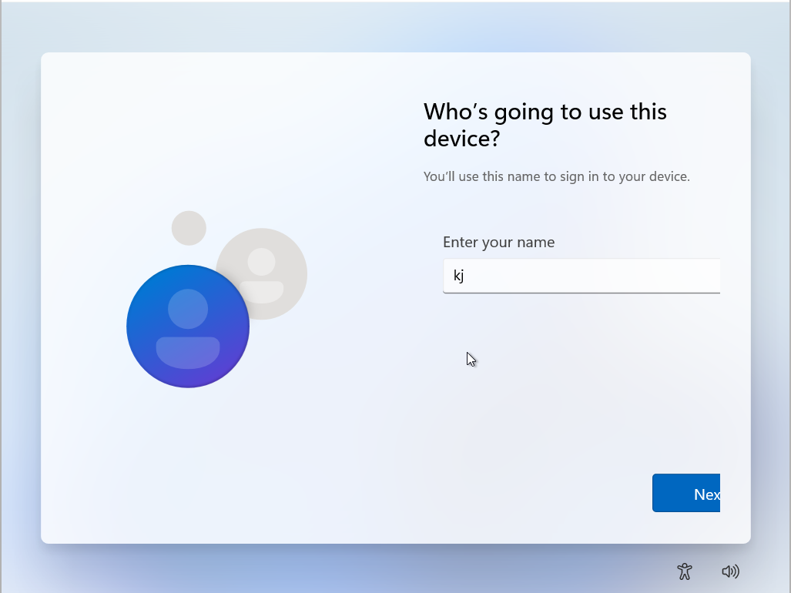
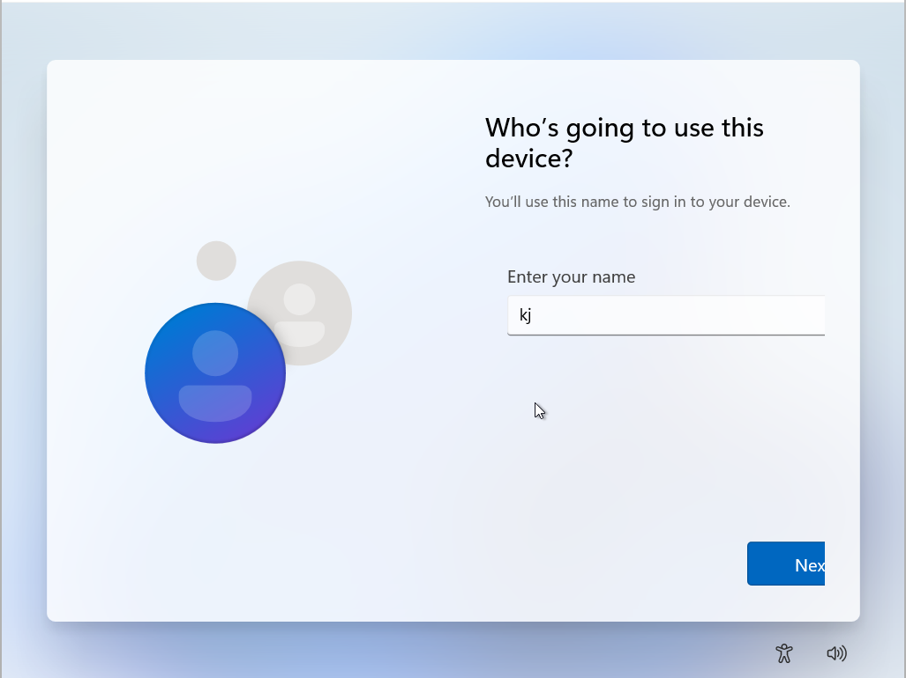

To create the local account, simply put in an account name, then a password.

To create the local account, simply put in an account name, then a password.

You will then be asked 3 security questions, which are used to unlock your Windows session if you ever forget your password.
üìå It is therefore strongly advised to write them down somewhere.
üìå The computer may perform updates if new ones are available and will reboot repeatedly.
Once the updates are complete, the computer may ask you for your code and will complete the installation as below.

The Windows welcome screen will appear when KJOS is installed on your computer.

üìå If you still have your bootable key plugged in, you can remove it.
üìå If you're on a VM, you can remove the ISO from connected disks in the same way as when you added it.
At this point, KJOS is usable and you can start using it.
You can also change the Windows language in:
Time & Language -> Language & Region -> Add a language
Language displayed in Windows -> [The language you downloaded]
However, there are still a few steps left to complete the installation of your Windows environment.